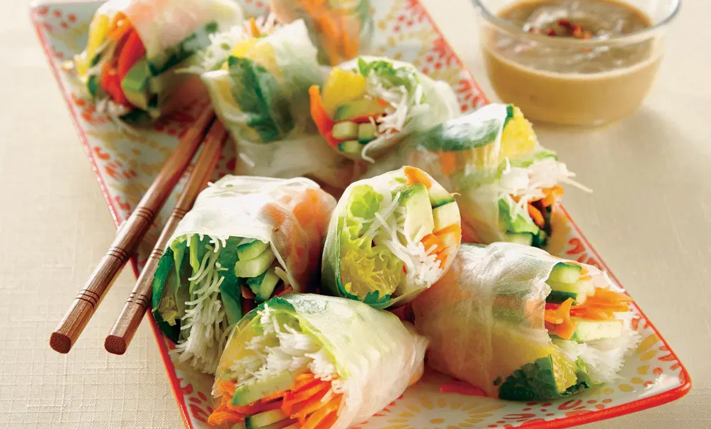
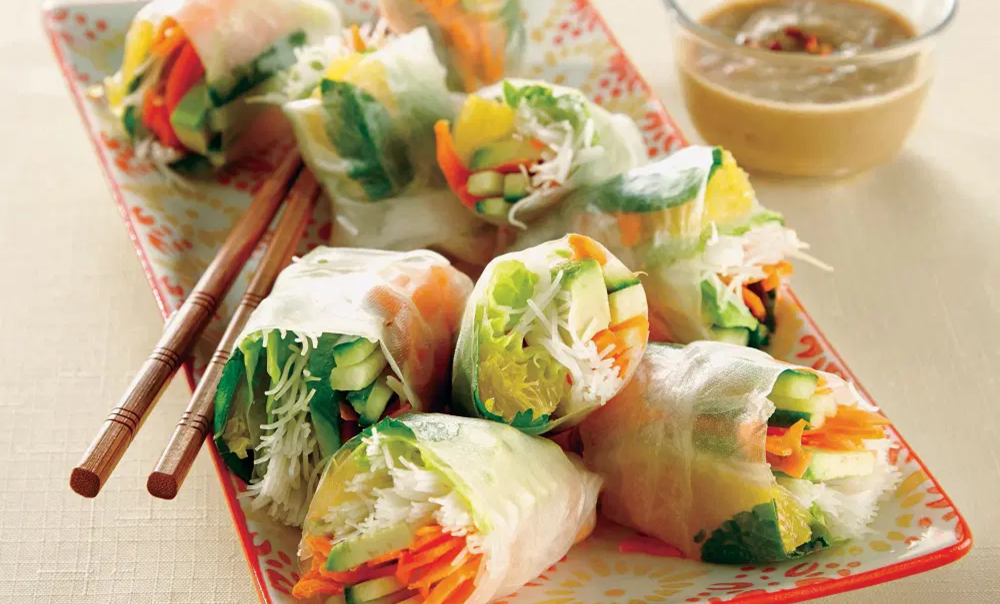

Vietnamese rolls are hugely popular, but those with allergies usually must keep their distance. From shrimp to peanuts, soy or dairy, these are usually little wraps of reactivity. But it needn’t be this way. Our refreshing rolls are light and delicious, filled with great and healthful colors and crunch. Photo: Andrew Grinton
Makes: 6 servings
Free of: gluten and all top allergens
Allergy-Friendly Spring Rolls with Sunflower Butter Sauce
Ingredients
Thai Sunflower Butter Sauce
- 1 cup chunky sunflower butter, room temperature
- 1 tsp ground ginger
- 1/2 tsp kosher salt
- 1 tsp crushed red pepper flakes
- 4 tsp rice wine vinegar (see Recipe Tips)
- 3/4 cup rice milk
Fresh Rolls
- 2 1/2 oz rice vermicelli, uncooked
- 1/2 unpeeled cucumber
- 1 avocado
- 6 rice wrappers (8 1/2-inch diameter)
- 6 romaine leaves, flattened
- 1 carrot, spiralized, about 2 cups (see Recipe Notes)
- 18 mint leaves
- 18 cilantro leaves
- 2 oranges, supremed (see Recipe Notes)
RECIPE TIPS
Prepping ahead: These fresh rolls can be covered in moist paper towels and refrigerated in an airtight container for up to 3 hours. The dipping sauce can be refrigerated overnight.
For an open fresh roll: Fold bottom edge of wrapper over filling. Gently pull left edge of wrapper over filling. Continue to roll upward, keeping filling as compact as possible. The right side of the roll will remain open, which showcases the colorful ingredients.
Instructions
- For sunflower butter sauce, combine sunflower butter, ginger, salt, pepper flakes, and vinegar in a medium bowl. Whisk until a smooth and thick mixture.
- Gradually whisk in 1/4 cup of rice milk. Add remaining rice milk and whisk until smooth and creamy. Refrigerate while preparing fresh rolls.
- For fresh rolls, cook rice vermicelli according to package directions to get about 1 1/3 cups of cooked noodles. Drain, rinse under cold water, and set aside.
- Slice cucumber in half lengthwise. Scoop out the seeds and cut into 3-inch by 1/4-inch strips. Set aside.
- Cut avocado in half lengthwise and remove the pit. With skin on, make lengthwise slices (about 1/4-inch thick) through avocado, without cutting the skin. Use a spoon to remove slices. Do this right before assembly of rolls to prevent avocado from browning.
- Fill a large bowl with warm water. Dip one rice paper wrapper into the water for 5 seconds. It should be slightly firm and will continue to soften once removed from water. Lay wrapper on a damp towel on your work surface and also cover with another damp towel.
- Place a romaine leaf on bottom third of wrapper. Trim leaf’s ends so it is about an inch inside the bottom and side edges of wrapper. On leaf, arrange a scant 1/4 cup of rice vermicelli, 3 avocado slices, a heaping 1/4 cup of spiralized carrots, and several cucumber sticks. Starting at end closest to you, tightly roll wrapper just around filling. Then, depending on size, arrange 2-3 each of mint and cilantro leaves and 2 to 3 orange segments on sheet. Fold in the left and right sides and continue to roll upwards while keeping the filling firmly tucked inside.
- Place roll, seam side down on a baking sheet lined with a damp towel, and cover with another damp towel to keep from drying out. Repeat soaking, filling, and rolling with remaining wrappers.
- To serve, cut rolls in half on the bias, and serve with Thai Sunflower Butter Sauce.